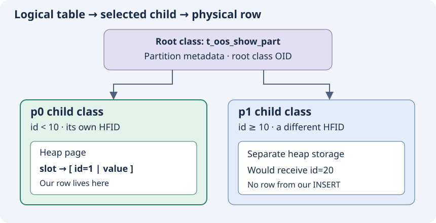

A heap file stores rows. It is database storage, not the process memory heap used by malloc. In our teaching example, p0 has heap H0 and p1 has heap H1.
id = 7 → p0 → H0. The rule is id < 10 for p0 and id ≥ 10 for p1.

Recall
For id = 12, which heap receives the row?
Check your answer
H1: 12 satisfies p1's rule, so its row belongs in p1's heap.
Primary source
partition_find_partition_for_record copies the selected partition's class_hfid into the output heap identifier.
Ask the agent if any term is unclear.